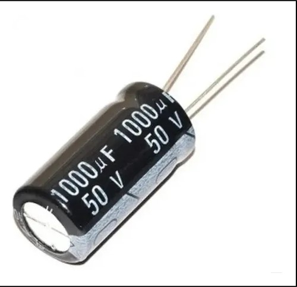

Trabajar con Pixel LED es apasionante, pero a veces frustrante. Aquí tienes las soluciones a los fallos más comunes que todo instalador enfrenta.
1. El primer LED no funciona (y nada más tampoco)
Este es el fallo más común y puede deberse a dos motivos:
- **Dirección de Datos Inversa:** Busca las flechas en la tira. Los datos deben entrar por el lado que dice **DI (Data In)**. Si conectaste el controlador al lado **DO (Data Out)**, nada va a encender.
- **Primer LED Quemado:** El primer LED es el que recibe todo el castigo de los picos de tensión. Si este muere, actúa como un fusible abierto y no deja pasar señal al resto.
2. Parpadeos aleatorios (Glitches)
Si los LEDs muestran colores como locos o parpadean sin sentido, el problema es casi siempre la **señal de datos** degradada:
- **Falta de Masa Común**: El error más básico. El GND de la fuente y el del controlador deben estar unidos.
- **Distancia Excesiva**: Si el cable entre el controlador y el primer LED supera los 2-3 metros, la señal digital TTL se deforma.
- **Interferencia Electromagnética**: No pases el cable de datos pegado a cables de 220V o motores. El ruido se "induce" en los datos y causa locura en los LEDs.
**Solución:** Usa cable mallado o **UTP (Categoría 5/6)** usando un par trenzado para Datos y GND. Para más detalles técnicos sobre cómo llegar lejos, consulta nuestra Guía de Distancias.
3. Colores "Cambiados" (Rojo por Verde)
No todas las tiras son **RGB**. Algunas son **GRB, BGR o incluso RGBW**. Esto se soluciona fácilmente en la configuración de tu software (WLED, Madrix, Arduino) cambiando el "Color Order". No es un fallo físico, es configuración.
4. LEDs congelados en un color
Suele ocurrir cuando la señal de datos se interrumpe físicamente. Revisa las soldaduras. Una "soldadura fría" puede hacer contacto intermitente y dejar a los LEDs esperando un pulso que nunca llega.
5. El Capacitor de 1000 µF: Tu Seguro de Vida
Muchas veces el primer LED se quema "sin razón aparente" al encender la fuente. Esto pasa por picos de tensión iniciales. La solución es colocar un **capacitor electrolítico de 1000 µF** entre el positivo (+V) y el negativo (GND), lo más cerca posible del primer LED.

**¿Qué hace?** Actúa como un pulmón de energía: absorbe los picos de voltaje al arrancar y suaviza las fluctuaciones de corriente cuando los LEDs cambian de brillo rápidamente (efecto flash).
6. ¿Por qué la tira se corta a la mitad?
Si la tira funciona bien hasta cierto punto y luego se apaga o queda en un color fijo, un LED está dañado y actúa como un "muro" para la señal.
Diferencias según el Chip:
- WS2812B: Al tener el IC integrado en cada LED, si uno falla, se corta toda la tira hacia adelante inmediatamente.
- WS2811: En 12V, un chip controla 3 LEDs. Si ese chip se daña, verás que un grupo de 3 LEDs se apaga y el resto de la tira también queda sin señal.
- WS2815: ¡Es la excepción! Tiene un cable de Backup Data. Si un LED se quema, la señal "salta" ese LED y el resto de la tira sigue funcionando normalmente.
⚠️ Regla de Oro del Instalador
NUNCA conectes o desconectes una tira bajo tensión (Hot-plugging). Un pico de voltaje al conectar el pin de datos antes que el de tierra puede quemar el microchip del primer LED instantáneamente.